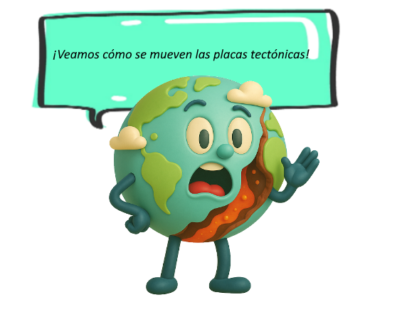
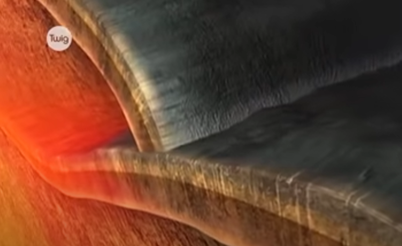
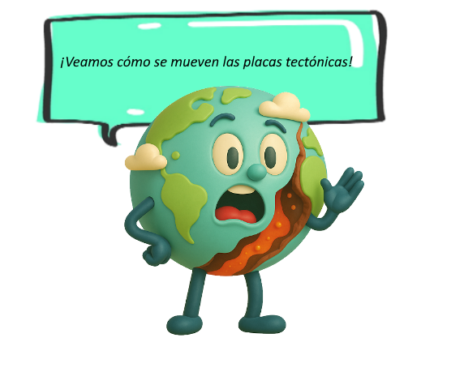
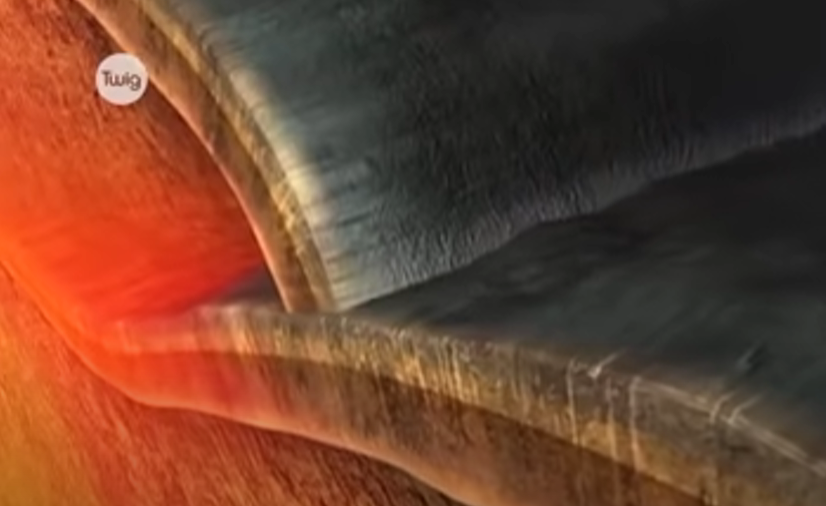

Durante miles de millones de años se ha ido sucediendo un lento pero continuo desplazamiento de las placas que forman la corteza de nuestro planeta Tierra.
En el siguiente video podrás observar sus movimientos


Durante miles de millones de años se ha ido sucediendo un lento pero continuo desplazamiento de las placas que forman la corteza de nuestro planeta Tierra.
En el siguiente video podrás observar sus movimientos

Foco de atención para esta actividad: reconocer los movimientos de las placas tectónicas y sus causas.
Consigna: Observa el siguiente video y responde las preguntas que presenta.
Obra publicada con Licencia Creative Commons Reconocimiento No comercial Compartir igual 4.0